Part 6
6.BGM: Ohayou Sayori!
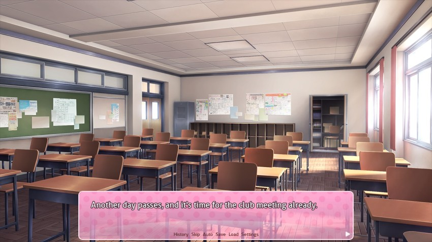
I've gotten a little more comfortable here over the past couple days. Entering the clubroom, the usual scene greets me.
 : Hi Mitayo~"
: Hi Mitayo~" : Yo, Sayori. Looks like you're in a good mood today."
: Yo, Sayori. Looks like you're in a good mood today."Sayori's always in a good mood. This shouldn't be a huge surprise.
: Ehehe~ I'm just still not used to you being in the club, that's all.": I see...that's a pretty simple thing to get you in a good mood. But I guess it's always the simple things with you, anyway."Rude?
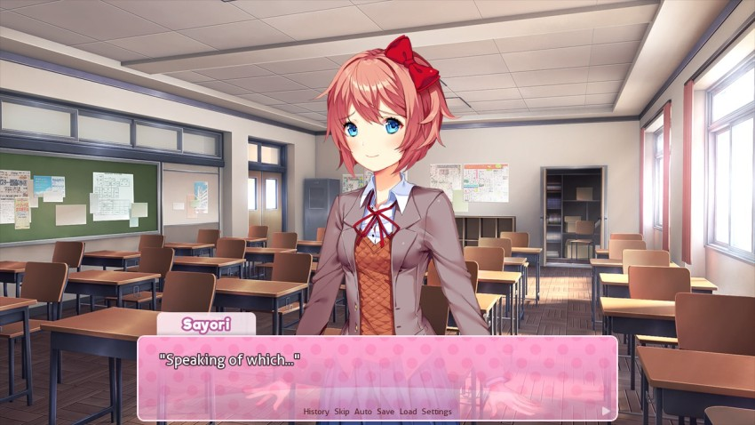
: I'm kinda hungry...will you come with me to buy a snack?": No thanks.": Eh?? T-That's not like you at all!!": I have my reasons. Why don't we take a look at your purse, Sayori?": E-Eh? Why that...all of a sudden?": No reason, really. I just wanted to look at it."I'm thinking of getting one myself. Is that Gucci or what?
: A-Ah..."Sayori nervously retrieves her coin purse. She fumbles with the latch and gets it open. Then, she turns it upside-down and lets its contents spill onto the desk. Only two small coins fall out.
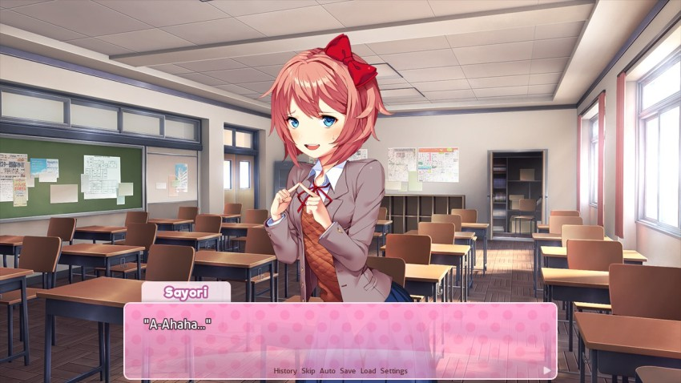
: I knew it...I can see right through you, Sayori.": That's not fair! How did you even know?": It's simple. If you had enough money in the first place, you would have bought a snack before coming to the clubroom. So, either you're not hungry and wanted an excuse to take a walk...or, you planned to conveniently forget that you spent all your money, so that I would lend you some!": But there's one more thing...you're always hungry! And so, that only leaves the one option!"Easy there, Pheonix, she just wanted a snack. No need for the third degree.
: Uwaaa~! I give up! Don't make me feel guiltyyy!": If you feel guilty, that means you deserve to feel guilty..."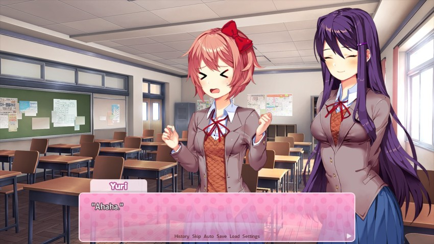
Yuri suddenly giggles.
: Eh?"I didn't notice that she was listening in. Her face is in her book, as always.
 : A-Ah! I wasn't listening or anything--! It was just...something in my book..."
: A-Ah! I wasn't listening or anything--! It was just...something in my book..."Yuri is the worst liar in a group of super-bad liars.
: Yuriiii...tell Mitayo to let me borrow some money...": That's--! Don't get me involved like that, Sayori. Besides...you should only buy what you can responsibly afford - and frankly, after pulling a mischievous little stunt like that, your suffering is fair enough retribution.": ...": Ah--! Did I just...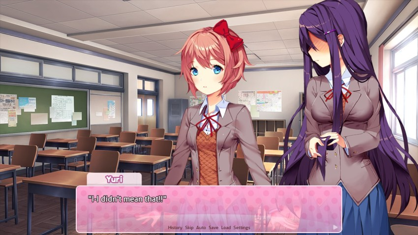
: I got too absorbed into my book...Uu...": Ahaha! I really like when you speak your mind, Yuri...it doesn't happen much, but it's a fun side of you!"To be fair, she's just parroting what we said a few minutes ago.
: That's...there's no way you could think that...": You were right, though...I did something bad and now I have to accept the revolution.": Retribution.": That!": Still, coming from you, Sayori...I guess there's a little devil inside all of us, isn't there?": Ehehe...": Don't let her fool you. Sayori knows exactly what she's doing. After all, she told you guys she was bringing me to the club before she even told me...": B-But...! You wouldn't have come if it weren't for the cupcakes...so I had to trick Natsuki into making them!": Come on, give me more credit than that, Sayori."No, that's actually what happened. I've been mostly kidding about us just showing up for cupcakes, but that's pretty much the only reason you chose to show up back in the first update.
: Ehehe..." : Kyaa--!"
: Kyaa--!"Out of nowhere, something smacks Sayori in the face and tumbles onto the desk.
: Ow...what was-- Eh?? A-A cookie!"Sure enough, it's a giant cookie wrapped in plastic. Sayori glances around.
: I-Is this a miracle?? It's because I paid my restitution!": Retribution.": Actually, that one almost worked..." : Ahahaha!": I was just gonna give it to you, but then I heard you blab about the cupcakes. It was totally worth seeing your reaction, though. Ahaha!"
: Ahahaha!": I was just gonna give it to you, but then I heard you blab about the cupcakes. It was totally worth seeing your reaction, though. Ahaha!"It's interesting that this seems to be a purchased cookie as opposed to one that Natsuki baked herself. It's also interesting for other reasons that I can't get into right now.
: N-Natsuki! That's so nice of you! I'm so happy..."Sayori hugs the cookie.
: Jeez, just eat it..."Sayori rapidly tears open the wrapper and takes a big bite.
: Sho good...Mmf--!"Sayori suddenly clasps her hands over her mouth.
: I bit my tongue..."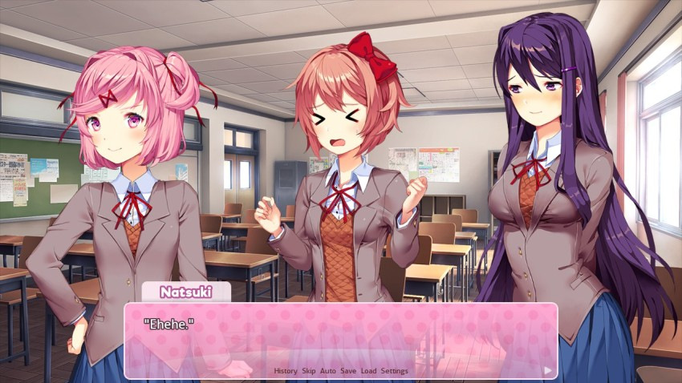
: You're going through a lot over just one cookie."This reinforces my 'Sayori is a puppy' theory.
Natsuki takes a bite of her own cookie.
: Ah, yours looks really good too, Natsuki! Can I try it?": Jeez...beggars can't be choosers!": But yours is chocolate...": Yeah, why do you think I gave you that one?"This seems fair. That being said, I would go for a white chocolate macademia nut cookie over most anything other type.
: Fine...still, I'm really happy that you shared this one with me. Ehehe~"Sayori gets out of her seat and goes behind Natsuki, then wraps her arms around her. Cookie still in hand, Natsuki reaches up to nudge Sayori off of her.
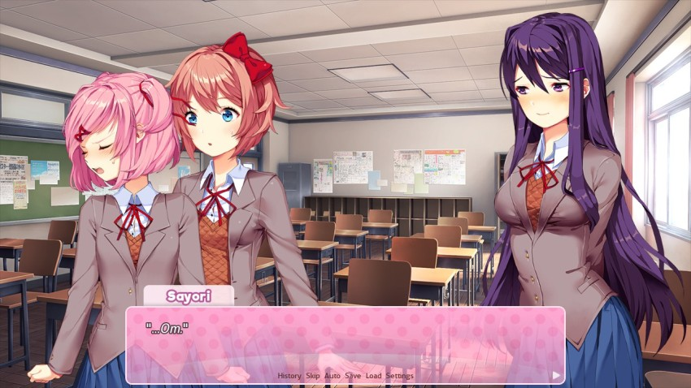
Sayori suddenly leans down and takes a bite out of Natsuki's cookie.
: H-Hey!! Did you seriously just do that?!": Uhuhuhu!"I don't have internet on the computer Im writing this on - if I did, I'd put a picture of Jabba here.
Mouth full, Sayori trots away to safety. Yuri and I laugh as well.
: Jeez! You're such a kid sometimes! Monika! Can you tell Sayori--eh?"Natsuki calling someone else a kid is the biggest case of hypocrisy I've seen in a long time.
Natsuki glances around. Monika isn't in the clubroom.
: Ugh...where's Monika, anyway?": Good question...have any of you heard anything about her being late today?": Not me...": Yeah, I haven't either.": Hm...that's a bit unusual.": I hope she's okay...": Of course she's okay. She probably just had something to do today. She's pretty popular, after all...": Eh? You don't think she...she has a...!": Ahaha. I wouldn't be surprised. She's probably more desirable than all of us combined."That seems over-the-top, but she is supposed to be the prom queen of the group.
: Ehehe, that's true...": Excuse me?!"Natsuki finally realizes that that's almost a dig.
Suddenly, the door swings open.
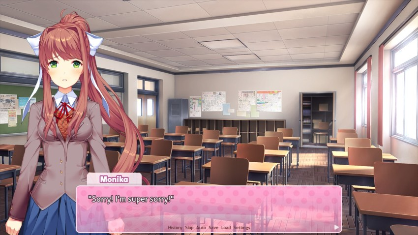
: Ah, there you are..." : I didn't mean to be late...I hope you guys weren't worried or anything!": Eh?? Monika chose the club over her boyfriend after all! You're so strong-willed!": B-Boyfriend...? What on Earth are you talking about?"
: I didn't mean to be late...I hope you guys weren't worried or anything!": Eh?? Monika chose the club over her boyfriend after all! You're so strong-willed!": B-Boyfriend...? What on Earth are you talking about?"She runs a literature/poetry club. It might not be as easy as one thinks to get one of those.
Monika quizzically glances at me.
: Ah, never mind that...what held you up, anyway?": Ah...well, my last period today was study hall. To be honest, I kind of just lost track of time...ahaha...": That makes no sense, though. You would have heard the bell ring, at least.": I must not have heard it, since I was practicing piano...": Piano...? I wasn't aware you played music as well, Monika.": Ah, I don't, really...! I kind of just started recently. I've always wanted to learn piano.": That's so cool! You should play something for us, Monika!": That's..."Monika looks at me.
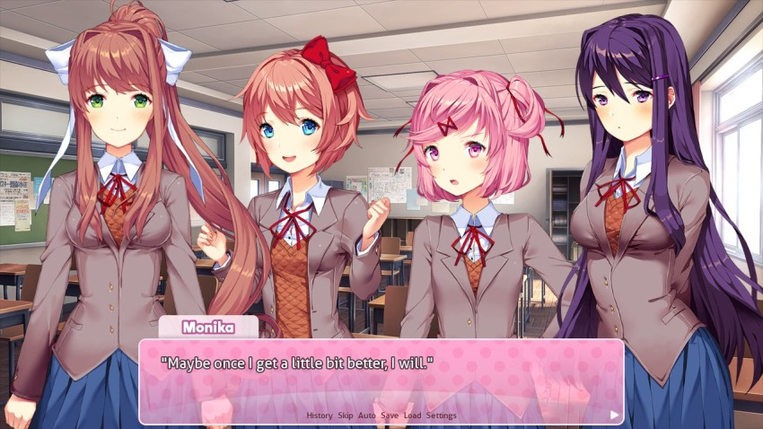
: Yay~!"Pretty soon we're going to be the Poetry-And-Piano Club, just you wait. We could call ourselves Doki Doki P-P.
: That sounds cool. I'd also look forward to it.": Is that so? In that case...I won't let you down, Mitayo."Monika smiles sweetly.
: Ah...I didn't mean any pressure or anything like that!": Ahaha, don't worry. I've been practicing a whole lot recently. And I'd really love the chance to share once I'm ready."This is gonna be like the ending of Groundhog Day with Phil Connors, isn't it?
: I see...in that case, best of luck.": Thanks~! So, I didn't miss anything, did I?"Sayori tried to scam me and then she and Natsuki had antics.
: Not...not really."I choose to leave out Sayori's mischievous escapade. I'm sure Natsuki will end up complaining to her, anyway. It looks like everyone has already settled down. Sayori somehow already finished her entire cookie. Yuri is back to her book, and Natsuki disappeared into the closet.
----------------
BGM: Play With Me!
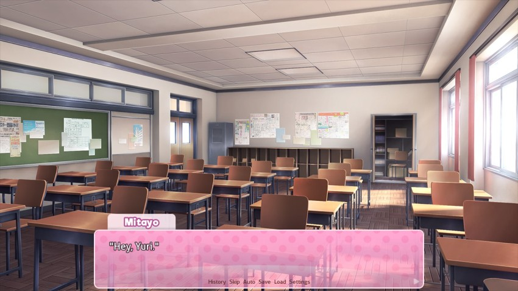
: Eh?": Ah..."I suddenly notice that Yuri is reading a different book from the one we've been reading together.
: Sorry! I didn't mean to interrupt...": Ah, no...I was kind of just waiting for you...": Ah, if that's the case...why don't we go ahead and get started?": Yes, let's! Actually, I have a request...do you mind if I make some tea first?": Not at all.": Thanks very much. If there's one thing that can make my reading time here any better, it's a nice cup of tea. Not to mention for yourself, as well."Im more of a coffee man myself, but I can get down with a good cuppa.
Yuri stands up and makes her way to the closet. I follow and watch as she retrieves a small water pitcher from the shelf - the kind with a filter inside.
: Sure..."Yuri hands me the water pitcher and also fetches an electric kettle.
: I'm going to plug this in at the teacher's desk, and then we'll go get some water."She walks past me and sets the kettle down on the teacher's desk. I simply watch her movements. To my surprise, the way she moves really contrasts her speaking mannerisms. Especially because of her long legs, Yuri appears elegant and methodical.
I think that just Monika is taller than Yuri, but its hard to tell.
: Okay, may I have the water pitcher? ...thanks. I'll be right back.: Ah, I might as well walk with you...": Yeah...why not? Shall we go, then?": Yeah...": Hm? Where are you two off to?"The book shop. We just read the most wonderful story! About a beanstalk and an ogre and-
: Eh? We're just...Yuri was going to make some tea, so..."I suddenly realize how weird it sounds to explain this to Monika.
: We're just filling the water pitcher...": Ah, okay! Sorry, I was just a bit curious...that's kind of a one-person job, isn't it?": That's--"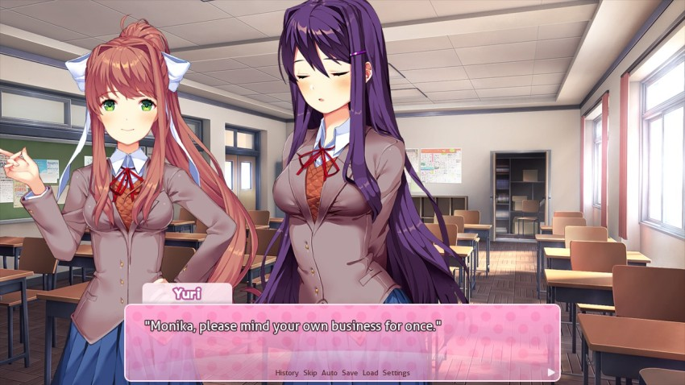
 Wooooah.: Or do you want to tell me there's something wrong with helping involve Mitayo in club activities?": E-Eh...?": --!"
Wooooah.: Or do you want to tell me there's something wrong with helping involve Mitayo in club activities?": E-Eh...?": --!"My mouth gapes.
: I...I suppose there's nothing wrong with that...": Hmph...then let's go, Mitayo.": Ah..."Yuri quickly exits the room, and I follow.
BGM: Music fades out.
Once in the hallway, she suddenly puts her forehead against the wall.
: I spoke without thinking...how could I say something like that...?": Yuri...": I just...something about the way she said that...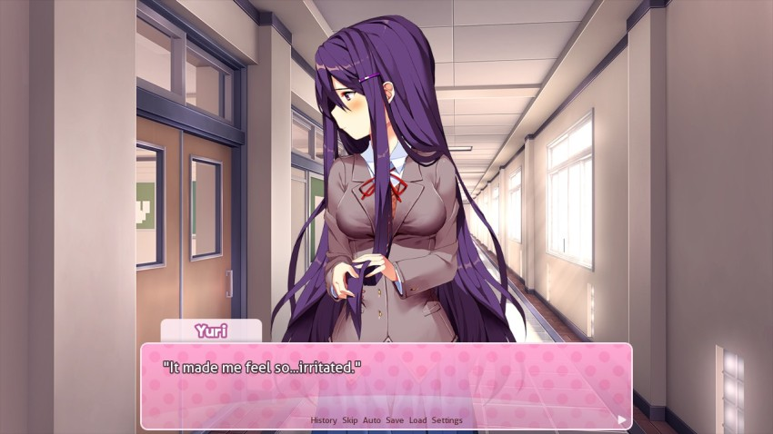
: What's wrong with me...?"You were a little abrupt I guess, but theres nothing necessarily wrong with what you said. It was just surprising, is all.
: No, Yuri. I think you did the right thing! I wasn't expecting it, but...it's also not right for Monika to judge people like that."BGM: My Feelings **New!**
: Mitayo...how come even when I do something bad...you're being nice to me?": Because. Nothing that you do is as bad as you make it seem in your head. Nobody's perfect. We have emotions, and we can't always hide them away. But you always amplify things in your head...your mind turns a light rain shower into a hurricane."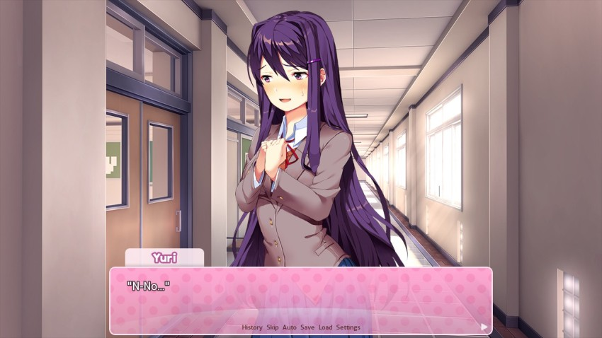
: Wouldn't you hate me for something as terrible as that...?" : Why would I hate you? I can't hate someone for having emotions...what kind of friend would do that?": Friend...you say? Ah...um..."
: Why would I hate you? I can't hate someone for having emotions...what kind of friend would do that?": Friend...you say? Ah...um..."Yuri lifts her head.
: Mitayo...I really like...being friends with you!": Ahaha...thanks, Yuri. I like being friends with you too..."I feel kind of awkward saying something like that...but I'm doing my best to help Yuri feel better.
These two are either super awkward or completely adorable. Or both.
: Anyway...!": Ah-- Yeah...shall we go?": Yeah."Yuri and I walk to the nearest water fountain. Once we fill up the water pitcher, we return to the classroom.
BGM: Play With Me!
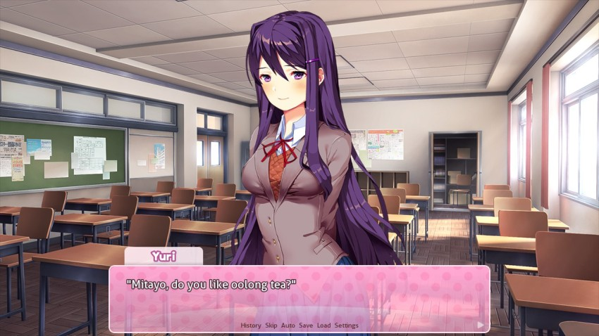
If Im going to do tea, I prefer it green or Earl Grey. Im not even sure what Oolong tastes like, exactly.
: Ah, yeah. Anything is fine.": Very well."Yuri sets the temperature on the kettle to 200 degrees.
: Now it's time to get the teapot.": You really do this properly, don't you?": Of course...I shouldn't do any less when I'm making tea for others.": Even if I'm not an expert on tea or anything...?": Huhu. In that case, you'll only be even more impressed."Maybe Im really wrong here but I dont think making tea is all that complicated. Maybe Yuri elevates it to a fine art.
: Ah...perhaps I will!"Yuri fetches the teapot and begins measuring the tea leaves. To my surprise, she even starts humming a little to herself.
: You must be in a good mood now...": Is that so? I was letting it show...and you noticed.""How could I be so stupid?? You hate me, don't you??"
: I was doing a bit of thinking...and I decided that I would try expressing myself a little bit more. It turns out it's not very hard for me to do...when it's you who's around, anyway." : Ah...that's great, Yuri! Just don't push yourself too much.": You're always worrying about me, Mitayo...it's very endearing.": That's..."
: Ah...that's great, Yuri! Just don't push yourself too much.": You're always worrying about me, Mitayo...it's very endearing.": That's..."Yuri wasn't kidding...I don't even know if I can keep up with this...! I watch Yuri pour a cup of tea for each of us.
: Mitayo, I have another request: do you mind if we sit on the floor today?"Thats an unusual request.
: Eh? Why's that?": It's a little bit easier on my back...I can read with my back against the wall rather than bending over at my desk.": Ah, sorry, I didn't realize.": No worries. I just have back pain fairly regularly, so I do my best to manage it.": Is that so? I wonder why that is...": It's most likely because my--ah--m-my...": Your posture, right? Always hunched over like that while reading...": Yes! I have terrible reading posture! So that's why we should sit on the floor."This is another boob joke. A lot of girls with big ol' honkers have back problems. This is a known and relatively common problem so I don't know why Yuri's so embarrassed about it, but that's Yuri for you. How this problem is alleviated by sitting on the floor is unclear - I'd figure that the lumbar support of a hard seat would be better. I'm no expert, though.
: Fair enough. I'll go ahead and get the book."I retrieve the book from my bag.
Wait, are we sharing the book again? Is this going to continue being a thing?
: Ah, I have some chocolate as well..."It's a bag of small chocolate candies that I kept hidden from Sayori's candy radar. I take it, since it'll go well with the tea.
"Hey Yuri, do you want a kiss? (uncontrollable eigth-grade giggling)"
Yuri and I then sit against the wall, teacups at our sides. As if in sync, we assume the same reading position as last time, each holding one half of the book. Except this time...our bodies are even closer to each other.
Okay, yep, I guess they ARE sharing the book again. Seriously, just return the other one, Yuri.
: I can't see too well...": --!"Yuri slides closer until our shoulders are touching. How am I supposed to focus on reading like this...?! Yuri was always kind of cute, but...when she's being less apprehensive, it's almost more than I can handle!
: Your teacup..."Yuri hands me my teacup. Holding it with my hand that's not holding the book, I end up in a position that makes it even harder to focus. Because now I need to worry about making sure I don't accidentally touch her chest...! Meanwhile, Yuri hasn't noticed a single thing. She wears her intense reading expression, and I can only presume the world around her has faded away. I use all of my willpower to focus on reading.
After a few minutes, I finally manage to relax a little. I put the teacup between my legs and fumble with the chocolate wrapper.
For some reason, I found it very easy to balance my tea cup on my lap.
: Ah, sorry..."I briefly let go of the book to finish opening the wrapper.
: You can have as much as you want.": Ah, that's...that's okay, I won't take any...": Eh? Are you sure?": Well...if I touch it, then it might get smudges on the pages...": Ah, you're right...I didn't even think about that. My bad...": No need to apologize. I'll hold the book, okay?": Are you sure...?": Of course."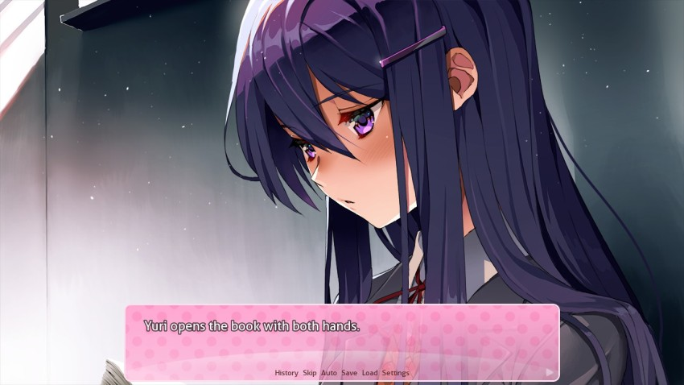
She holds it so that I don't have any harder of a time reading from it. But as a result, her left arm is practically resting on top of my leg.
: Well, in that case..."Yuri is already totally focused on reading again. I take a chocolate candy and pop it into my mouth. Then, I take another chocolate...and I hold it up to Yuri. She doesn't even look away from the book. She simply parts her lips, as if this situation was completely natural. But that means I can't stop here! I apprehensively place the chocolate in her mouth. Just like that, Yuri closes her lips over it.
Haha, wow. Thats almost smooth.
: Eh...?"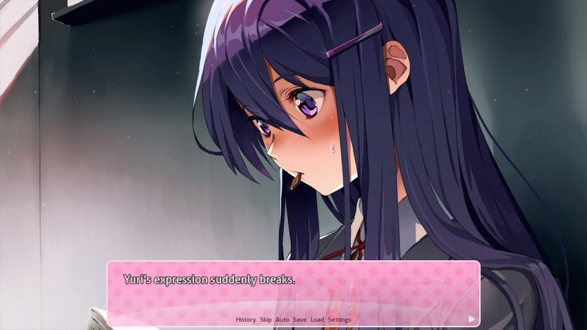
: Did...did I just..."Yuri looks at me like she needs to confirm what just happened.
: U-Um...Mitayo...""You probably hate me now, don't you?"
: S-Sorry! I guess I shouldn't have done that...": Ah, that's...well...y-you were just helping...that's something that...friends do...right?": I mean..."Not really in this kind of context, but...
Yeah, this isnt really a friend thing.
: Yeah...that's all it was.": Yeah...then...you don't need to stop or anything...": I-I see..."The situation has gotten really tense...Yuri tries to return to the book. But I can tell just by her expression that even she can't focus now. My heart is pounding...I nervously take another chocolate between my fingers. But this time, Yuri's eyes meet mine.
Okay, this is officially no longer about the chocolate.
: ..."How did it even come to this...?
It was only a kiss, it was only a kiss.
Yuri doesn't avert her gaze.
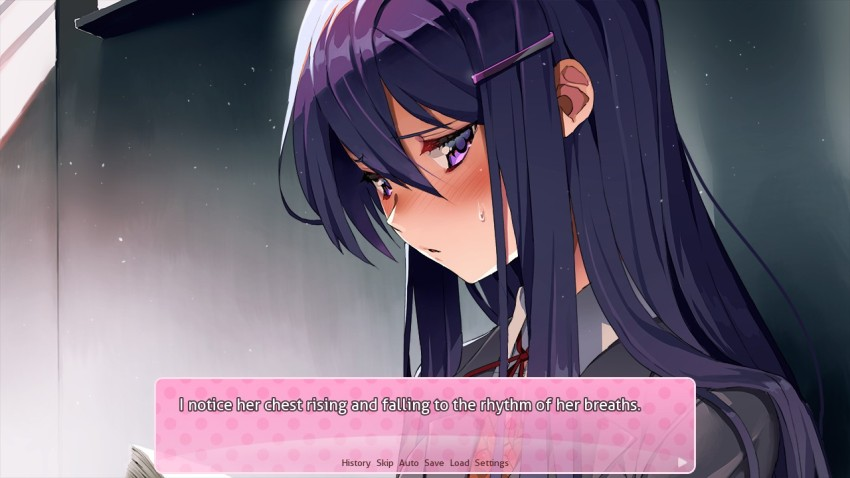
I raise my arm...
: Ah..."Like before, Yuri parts her lips. But...it's different this time. I take the chocolate and place it in her mouth. I feel her hot breath on my fingers.
: Okay, everyone!"BGM: Music ends abruptly.
: Uwa--": A-Ah!"LITBLOCKED
BGM: Ohayou Sayori!
Yuri jolts back.
: It's time to share poems! Mitayo, you can help Yuri put away the tea stuff, right?"Also, could you stop the foreplay during club time, please?
: Y-Yeah...of course.": Okay, thanks!"The spell is abruptly broken.
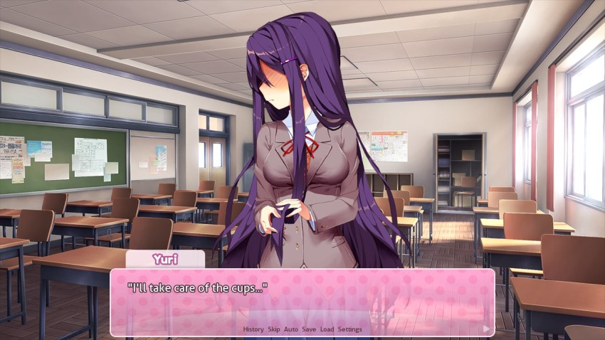
: Yeah..."Yuri picks up the teacups from the floor. I pick up the bag of chocolates. In the end, we hastily clean up without so much as a word between us. I get the feeling this is something neither of us will have the courage to bring up...
Yeah, seems about right considering the two of them.
BGM: Okay, Everyone!
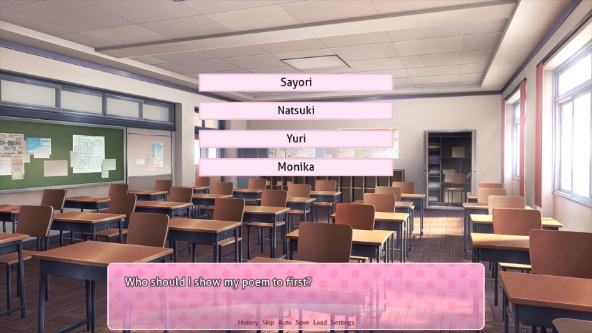
You know the drill, boyos. If you have a request of who to show our Hot Topic poem to first, let me know - but it's not a huge deal if you don't care. No huge difference choice-wise.
As an aside, I appreciate all of the lovely poetry received so far. Its starting to feel like were all part of the Literature Club now.